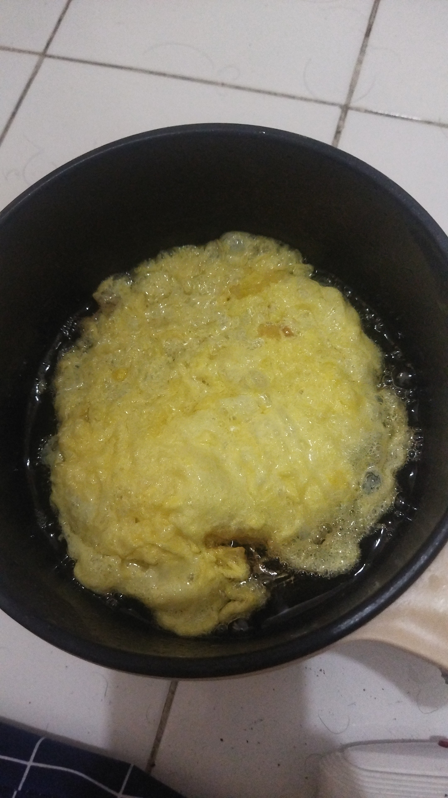

Anggota Geng Van der Linde, Arthur adalah tangan kanan Dutch yang dipercaya, dan protagonis cerita utama di Red Dead Redemption 2. Pada tahun 1899, dia berusia 36 tahun.
Kehidupan seorang penjahat adalah satu-satunya yang Arthur Morgan ketahui. Van der Linde dari Belanda bertemu Arthur ketika dia baru berusia 14 tahun, seorang anak nakal yang sangat rusak dan pemarah yang telah berada di jalanan sejak kehilangan orang tuanya di usia muda.
Arthur menjadi anak didik Belanda yang pertama dengan sedikit bimbingan dan struktur, dia berubah menjadi penegak hukum yang paling dapat diandalkan dan cakap. Kesetiaannya kepada pemimpin geng tersebut tidak tergoyahkan saat ini.
Dia tajam, berkepala dingin, dan kejam, tapi dengan rasa hormatnya sendiri. Seorang pria yang bangga menyelesaikan pekerjaannya.
John Marston adalah karakter yang muncul sebagai Companion dan Playable Character di Red Dead Redemption 2.
Dia adalah protagonis dari game "Red Dead Redemption" pertama (yang merupakan cerita sekuel Red Dead Redemption 2). Dia adalah anggota Geng Van der Linde.
Pada tahun 1885, Dutch menyelamatkan seorang anak laki-laki dari hukuman mati tanpa pengadilan di tangan beberapa pemilik rumah yang memergokinya mencuri di Illinois. Anak laki-laki itu ternyata adalah John Marston yang berusia 12 tahun, seorang anak nakal yang mulai merampok dan membunuh di usia muda.
Ibunya meninggal saat melahirkan dan ayahnya menjadi buta dalam perkelahian di bar, dan meninggal pada tahun 1881 ketika John berusia delapan tahun. Marston menghabiskan beberapa tahun berikutnya di panti asuhan sebelum melarikan diri untuk mencari peruntungan di jalanan.
Dia sekarang bertolak belakang dengan pribadi yang dahulu dalam hidupnya. Suami dalam segala hal terlebih status sah Abigail, dan ayah Jack, dia tidak selalu jelas tentang di mana letak prioritasnya. John terluka parah selama peristiwa Blackwater yang terjadi sebelum awal cerita.
Van der Linde Belanda muncul sebagai Karakter Utama dan Pendamping di Red Dead Redemption 2.
Dutch Van der Linde adalah pemimpin karismatik dari geng penjahat yang cukup besar, Geng Van der Linde.
Dutch memandang dirinya bukan sebagai penjahat, namun sebagai sosok yang melawan sistem kekuasaan yang korup. Dia secara radikal menentang kendali pemerintah. Dia menghargai kebebasan individu di atas segalanya dan bermimpi untuk hidup mandiri, mengambil kekayaan dari orang lain dan tidak tunduk pada otoritas.
Dia mengasuh anak yatim dan anak jalanan, mengajari mereka cara membaca, menanamkan harga diri dan pentingnya berpikir mandiri. semua dibingkai dalam ideologinya sendiri dan tentu saja mereka melakukan sebagian besar pekerjaan kotornya. Dia percaya kepada mereka sebagai ganti mereka percaya kepadanya.
Dutch bersifat idealis, anarkis, karismatik, banyak membaca dan hidup dengan baik, namun mungkin mulai terurai di bawah tekanan dunia modern yang merambah. Dia dengan enggan mulai menyadari bahwa cara hidup yang dia junjung tinggi dengan cepat menjadi sebuah proposisi yang tidak realistis.
Abigail Roberts (Marston) adalah karakter yang muncul sebagai Companion di Red Dead Redemption 2.
Abigail Roberts adalah pasangan romantis John Marston, dan ibu Jack yang waspada. Dia adalah anggota Geng Van der Linde.
Seorang yatim piatu yang tumbuh besar dan mencari nafkah di bar dan rumah bordil di Barat, dia diperkenalkan ke geng Belanda oleh Paman sekitar lima tahun yang lalu.
Abigail adalah wanita yang kuat, berpikiran tunggal, dan lugas yang telah melihat banyak kehidupan dan tahu apa yang diperlukan untuk bertahan melawan rintangan.
Putranya yang masih kecil, Jack, adalah kebanggaan dan tujuan besarnya. Dia bertekad untuk memberinya masa kecil yang lebih baik dan lebih penuh kasih daripada yang pernah dia alami, meskipun itu adalah masa kecil yang tidak biasa.
Charles Smith adalah karakter yang muncul sebagai Companion di Red Dead Redemption 2.
Seorang rekrutan yang relatif baru di Geng Van der Linde, Charles Smith adalah orang yang pendiam tetapi sangat kompeten dalam segala hal yang dia lakukan, dan dia hampir tidak terkalahkan dalam pertarungan.
Terlahir dari ibu penduduk asli Amerika dan ayah keturunan Afrika-Amerika, Charles menghabiskan seluruh hidupnya dalam pelarian dan tidak pernah merasa menjadi miliknya di mana pun. Dia bergabung dengan Dutch terutama karena dia menemukan kesamaan dengan kode geng tersebut.
Seorang pemburu dan pelacak yang ahli, Charles adalah pria yang baik dan jujur yang juga mematikan dalam segala jenis pertarungan. Sangat berprinsip, dia berjuang di dunia yang tampaknya tidak menghargai cita-cita tersebut.
Uncle merupakan karakter yang muncul sebagai Companion di Red Dead Redemption 2.
Dia adalah anggota Geng Van der Linde.
Seorang pria yang suka bergaul dan suka bersenang-senang, Uncle selalu ada saat wiski terbuka dan tidak terlihat di mana pun saat ada pekerjaan yang harus diselesaikan.
Tidak ada yang tahu pasti berapa umurnya, bagaimana dia masih hidup, atau apakah dia benar-benar paman seseorang. Dia menjalani kehidupan penuh warna yang semakin bersemangat dengan setiap cerita yang dia ceritakan. Dia mengaku memiliki banyak istri dan telah bepergian ke seluruh penjuru dunia.
Dia juga menegaskan dia menderita sakit pinggang terminal. Jika dia tidak begitu menghibur, geng itu pasti sudah melepaskannya bertahun-tahun yang lalu.
Nama : Diaz Garcia Pratama
IF-6
NIM : 10123224
Hoby saya banyak tetapi paling suka makan
